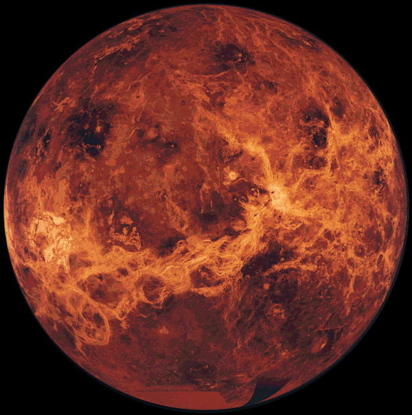

Nombre |
Información |
VENUS |
Venus es el segundo planeta del sistema solar en orden de distancia desde el Sol, el sexto en cuanto a tamaño, ordenados de mayor a menor. Al igual que Mercurio, carece de satélites naturales. Recibe su nombre en honor a Venus, la diosa romana del amor (gr. Afrodita). Se trata de un planeta de tipo rocoso y terrestre, llamado con frecuencia el planeta hermano de la Tierra, ya que ambos son similares en cuanto a tamaño, masa y composición, aunque totalmente diferentes en cuestiones térmicas y atmosféricas (la temperatura media de Venus es de 463,85 ºC). La órbita de Venus es una elipse con una excentricidad de menos del 1 %, formando la órbita más circular de las de todos los planetas; apenas supera la de Neptuno. |